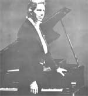
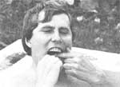

Selected doin's of well-known MOTHER-types from around the world.
Frank Serpico-the idealistic crusader who received both adulation and life-threatening opposition after he publicly exposed corruption in the New York City police department in the early 1970's-has devoted his energies, over the past several years, to investigating the probable results of our society's "inordinate trust in technology". If humans continue to take from the earth and give nothing back, Serpico says, we'll eventually exhaust the planet's resources ...and he cites the damaging effects of air and water pollution as evidence of the price we'll pay for misusing the earth. "There will be famines," Frank warns, "and you can't eat buildings! "
After leaving the country to recover from the near-fatal gunshot wounds he suffered during a drug raid soon after his controversial testimony against his colleagues on the Manhattan police force, Serpico rambled over much of Europe and Asia, studying a variety of spiritual disciplines and looking for answers to the doubts and fears he still carried with him. Finally, he settled on a small farm in Holland, where he was able to come to terms with himself. There, he began to care for a menagerie of farm animals and to develop a healthful lifestyle based upon simple positive thinking, self-sufficiency, nonviolence, a wholesome diet, and respect for the environment.
As evidence of his commitment to this wholistic way of living, the ex-cop has helped found an alternative university in northern Wales: Orissor College in Corwen, where students of all ages undertake a nontraditional curriculum that includes courses in natural healing, the mind, the environment, and self-reliance skills. Serpico hopes to establish similar institutions in this country as well ...and much of his time is now spent on the lecture circuit, spreading his message of hope to college and TV audiences. -JM.
WLADIMIR JAN KOCHANSKI
A performer's life on the road is usually depicted as being an endless round of parties, fine food, and travel to exotic places. The reality of the profession, however, is more often characterized by late-night plane flights, meals on the run, and stolen catnaps ...but classical pianist Wladimir Jan Kochanski has found a way to cope with the rigors of touring. The Polish-born music maker plays over 100 solo recitals each season, and he recently completed an exhausting concert tour of 40 cities in 40 days. However, Kochanski is able to handle his demanding schedule by exercising regularly and by eating a diet of natural foods (including raw dairy products, fresh fruits and vegetables, whole grains, and limited amounts of meat). He also takes daily vitamin supplements, which were prescribed for him by the late Dr. Della Moser Pennington, a noted specialist in natural health care.
Twenty years ago, just after the young artist had graduated from Juilliard, he was stricken by chronic internal bleeding that hospitalized him for three years. Dr. Pennington's treatment (plus the wholistic regime of diet and exercise she prescribed) saved Kochanski's life ...and he's followed her advice ever since. The pianist now works out for 45 minutes every day and-when he's at home in California-also swims, walks on the beach, and lifts weights.
"Daily exercise and careful diet are necessary to my concerts," Wladimir explains. "Truly great music exerts love and warmth ...and this can be accomplished only by a strong, happy individual with a sound and healthy body."- JM.
ROBERT NARA
Despite fierce opposition (which was detailed in the Plowboy Interview in MOTHER NO. 56), Michigan dentist Bob Nara persists in criticizing members of his profession for promoting reparative, rather than preventive, dentistry.
Dr. Nara's radical convictions have incurred the steady disapproval of the Michigan State Dental Association and Board of Dentistry. The authorities suspended Dr. Nara's license to practice for 15 months in 1978 and 1979, citing his habit of allowing paradental assistants to perform duties that he considered to be routine, and his advertisement for an "unrecognized specialty" (the preventive system he calls Oramedics) in the Yellow Pages of the Houghton, Michigan telephone directory. Nara is now facing yet another suspension-or perhaps even permanent revocation of his license ...Plus second-offense felony charges (for, placing the ad again) that could earn him a two-year prison sentence and a $5,000 fine. Yet the doctor refuses to give in, and he's currently attempting to secure hearings in state and federal appeals courts.
In his self-proclaimed role as crusader against the shortcomings of what he calls "organized dentistry", Bob Nara is determined to alert as many people as he can to his central belief ... the profession has been making a living by repairing the results of a disease they could have been curing all along."- JM.
IN BRIEF ...
Fans of HARRY CHAPIN (see Newsworthies in MOTHER NO. 55) and antihunger activists everywhere were saddened to learn of the ballad singer's death in a July 16th traffic accident on Long Island. As part of his concern about worldwide starvation, Chapin participated in scores of benefit concerts, cofounded World Hunger Year, and served on a Presidential Commission on malnutrition ... Among the people named to a Nutrition Hall of Fame established by the Center for Science in the Public Interest are FRANCES MOORS LAPPS (see Newsworthies in No. 69), RALPH NADER, GEORGE S. MCGOVERN, ADELLE DAVIS, and both J. I. and ROBERT RO DALE ... THOR HEYERDAHL has been adventuring again, and the sailor's new book, The Tigris Expedi tion (Doubleday, $17.95), chronicles his five-month voyage in a reed boat through the Arabian Sea and the Persian Gulf ...This fall will mark the opening of the Institute for Resource Management, a new graduate school of environmental studies initiated by ROBERT BEDFORD and jointly sponsored by the University of Idaho and Washington State University ... Labor leader CESAR CHAVEZ received the Vegetarian Ethic Award at "Action for Life", a national conference on vegetarianism and animal protection ... Former Secretary of the Interior CECIL ANDRUS was named Conservationist of the Year by the National Wildlife Federation, in honor of his work to insure passage of the historic Alaska Lands Act last year ... Congressman GEORGE BROWN (D-California) has proposed an amendment to the 1981 Farm Bill, calling for increased attention to organic farming and urging the full implementation of the recommendations of the USDA's Organic Task Force Report. -JM.
|
|
 |
 |